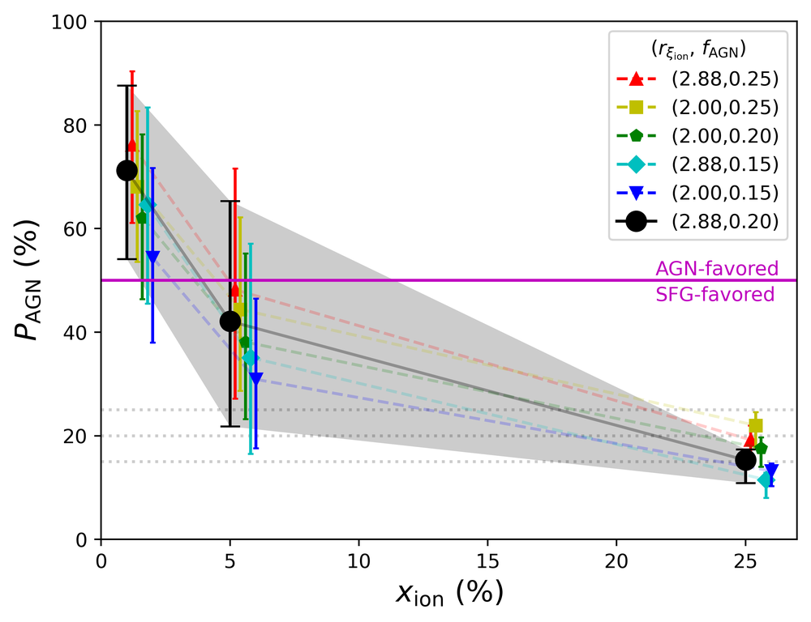
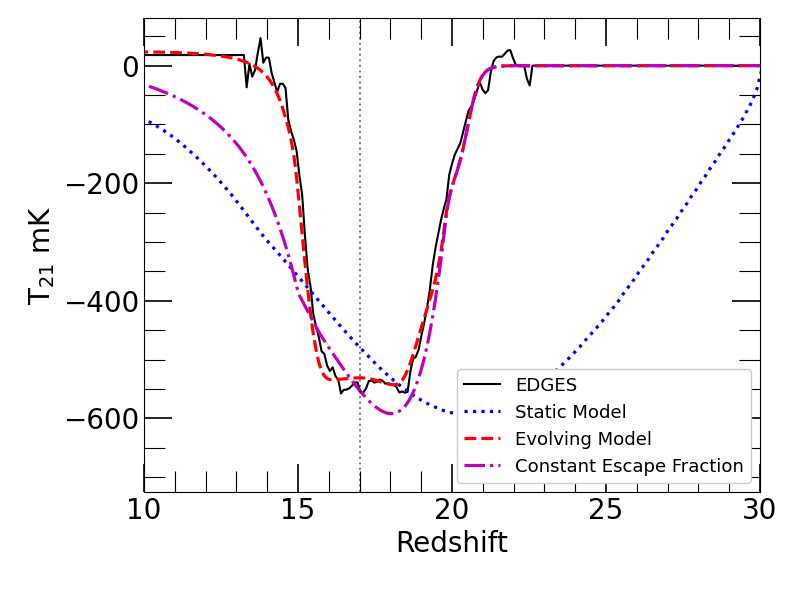
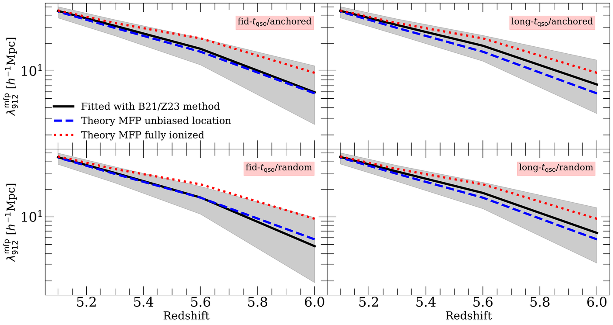

A Lyman-alpha Emitter at z = 13
Led by Joshua Cohon, an undergraduate researcher I advised at Arizona State University (2024-2026). Joshua presented this work at the 246th meeting of the American Astronomical Society, and was recently awarded a prestigious Goldwater Scholarship.
The JADES survey recently reported the discovery of JADES-GS-z13-1-LA, a galaxy at z = 13 with strong Lyman alpha emission - the most distant Lyman alpha emitter (LAE) ever observed. Because Lyman alpha photons are readily absorbed by neutral hydrogen, this detection suggests either that the IGM surrounding the galaxy was already highly ionized, only ~330 million years after the Big Bang, or that the galaxy's intrinsic Lyman alpha emission is extreme. In Cohon+25, we used radiative transfer simulations of reionization that capture the distribution of ionized gas in the z = 13 IGM to investigate what this galaxy implies for reionization. We found that if it is a typical star-forming galaxy with properties like those of LAEs at z ~ 6, its detection suggests the universe was at least ~5% ionized by z = 13.


We also investigated whether the galaxy's extreme properties could be driven by an active galactic nucleus (AGN), which is expected to produce more ionizing photons than a typical star-forming galaxy. The image on the left shows the probability that JADES-GS-z13-1-LA hosts an AGN as a function of the ionized fraction of the IGM at z = 13 in our three reionization models (black points), along with variations in our assumptions (colored points). The probability is 71%, 42%, and 15% if the IGM is less than 1%, ~5%, and ~25% ionized, respectively - so an AGN is favored if reionization started late. We also highlighted other features in the galaxy's spectrum that may point to AGN activity, including strong Lyman alpha damping wing absorption extending to ~1300 Å and a possible C II* emission line at 1335 Å. Our findings strongly motivate dedicated follow-up observations to determine whether this galaxy hosts an AGN.
High-Redshift AGN and the EDGES Signal
Led by Alexandra Nelander, an undergraduate researcher I advised at Arizona State University (2024-2025). This work formed Alexandra's undergraduate senior thesis.
The Experiment to Detect the Global Epoch of Reionization Signature (EDGES) has reported evidence for an absorption feature in the sky-averaged radio background near 78 MHz. Interpreted cosmologically, it corresponds to absorption of 21 cm photons by neutral hydrogen at z ~ 17. However, the signal is too deep to explain with standard physics, requiring either an excess radio background above the CMB or non-standard cooling of the IGM. In Nelander+25, we explored whether this excess radio background could be produced by a population of radio-loud AGN at high redshift - which could also explain the unexpected abundance of UV-bright objects observed by JWST at z > 10.


We found that producing enough radio photons to explain the depth of the EDGES signal requires that nearly all high-redshift UV-bright objects down to MUV ≈ -15 are radio-loud AGN, and that their UV luminosity density declines by at most 1.5 orders of magnitude between z = 10 and 20. In addition, the fraction of X-ray photons escaping these objects must be 1% or less of their expected production rate, to keep them from heating the IGM and washing out the absorption signal. Reproducing the shape of the signal is even harder. The image on the left compares the EDGES measurement (black) to several of our models. A model with constant AGN properties (blue dotted) fails to reproduce the shape of the signal, and allowing these properties to evolve with redshift in an observationally-motivated way (magenta dot-dashed) comes much closer, but still misses the sharp edges and flat bottom of the trough. Only by fine-tuning the redshift evolution of the X-ray escape fraction (red dashed) could we match the signal. We concluded that radio-loud AGN are an unlikely, though physically possible, explanation for EDGES because of the extreme properties they would require.
Neutral Islands and Mean Free Path Measurements
Led by Joshua Roth, an undergraduate researcher I co-advised at UC Riverside (2022-2023). Joshua presented this work at the 241st meeting of the American Astronomical Society, and was accepted to graduate school at Princeton.
Measurements of the ionizing photon mean free path (MFP) from composite quasar spectra may point to reionization ending at z < 6 (see The Mean Free Path). These measurements are challenging because they rely on assumptions about the proximity zones of the quasars - and some quasars may have been close to "neutral islands" where reionization was still ongoing. In Roth+24, we addressed this question using mock MFP measurements from radiative transfer simulations.


The image above compares the MFP recovered by applying the measurement method of Becker+21 and Zhu+23 to our mock spectra (black solid) to the true MFP in our simulations including neutral islands (blue dashed), and to the MFP in a fully ionized IGM (dotted), for four different assumptions about quasar lifetimes and environments. The gray shaded regions show the range of fits obtained when varying an assumption in the fitting procedure. Even in the presence of neutral islands, the mock measurements agree with the true spatially averaged MFP to within 30%, and are sensitive at the < 50% level to assumptions about quasar environments and lifetimes for realistic models. We also showed that neutral islands can suppress the transmission at rest-frame wavelengths below 912 Å by up to a factor of 2 at z = 6, although this effect is almost entirely degenerate with the normalization of the spectrum and does not significantly bias the inferred MFP. Future analyses with improved data may need to model neutral islands explicitly, and we outlined a method for doing so.